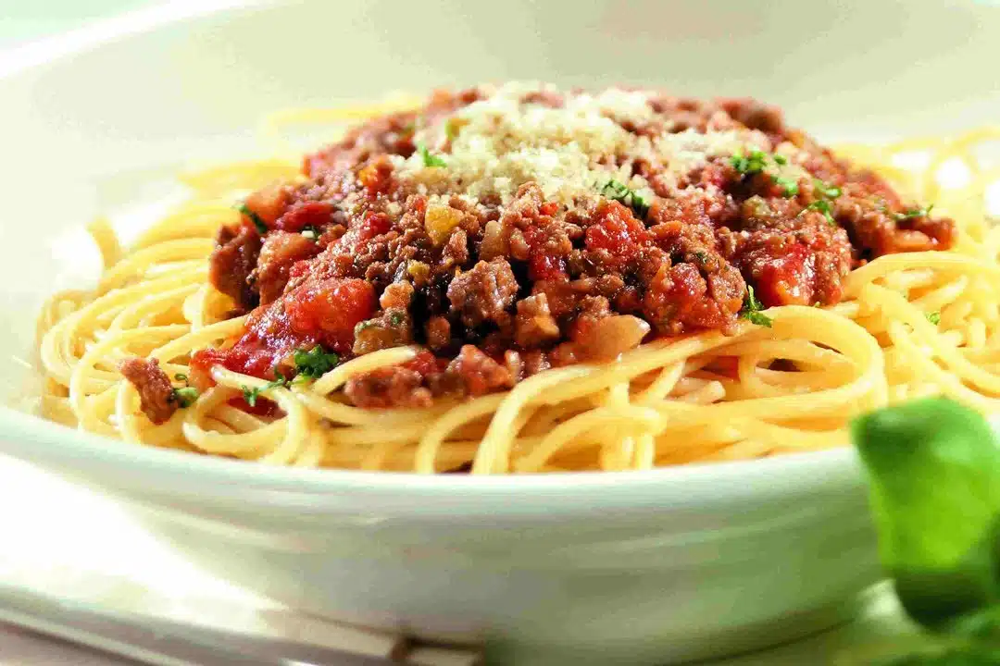

Fideos Caseros con Bolognesa

Ingredientes
- Harina, huevos y sal
- Carne picada
- Tomate triturado
- Cebolla y ajo
- Orégano, laurel, sal y pimienta
- Queso rallado
Preparación
- Amasar la masa y cortar los fideos.
- Saltear cebolla, ajo y carne.
- Agregar tomate y condimentos, cocinar 20 min.
- Hervir los fideos y servir con salsa y queso.
Consejo Paulinesco: podés congelar porciones de salsa.